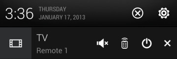

Controlling your TV from the Notifications panel
Get a call while watching TV? You can easily use
HTC remote
to mute the TV and more.
Slide open the Notifications panel.
Tap the controls to mute the TV, switch channels, and more.
